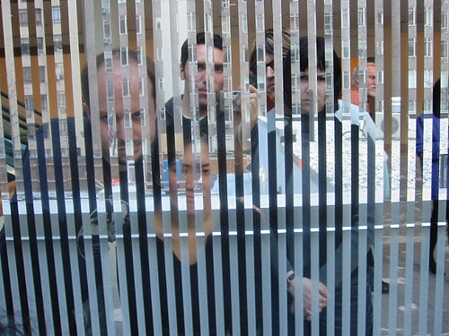

|
Here we are doing our best to look pouty because we got chastized by the information booth worker ("You're standing RIGHT NEXT to it, sir!") and walked by this installation several times before we found it. The installation we were looking for turned out to be the mirrored stripes on the window that ran the length of the second floor. The modern art, and lack thereof, made us cranky. |